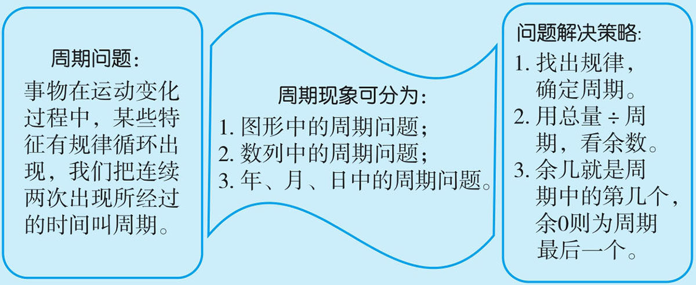
例1 有280颗珠子，按2颗红珠，4颗白珠，3颗黑珠排列，最后一颗是什么颜色？这280颗中，红珠、白珠、黑珠各多少颗？
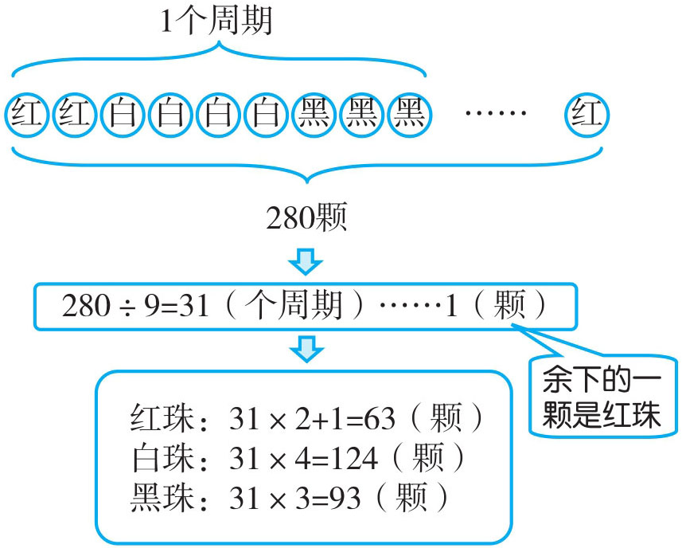
280÷9=31（个周期）……1（颗）
红珠：31×2+1=63（颗）
白珠：31×4=124（颗）
黑珠：31×3=93（颗）
答：最后一颗是红色。红珠、白珠、黑珠各63颗、124颗、93颗。
例2
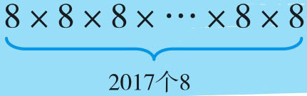
积的个位数字是几？要判断2017个8相乘的积是几，关键要确定积的个位上数字出现的周期。一个8个位上是8，两个8相乘个位上是4，三个8相乘个位上是2，四个8相乘个位上是6，五个8相乘个位上又出现了8……。个位会依次重复出现8、4、2、6，说明8、4、2、6这四个数为一个周期。由2017÷4=504（个周期）……1（个）可知，2017个8相乘积的个位是8。
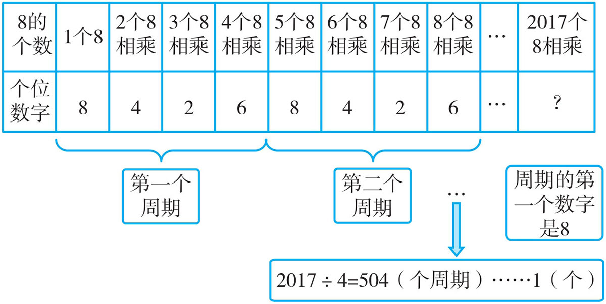
2017÷4=504（个周期）……1（个）
答：2017个8相乘的积个位数字是8。
例3 2018个学生按下列方法编号排成五列：
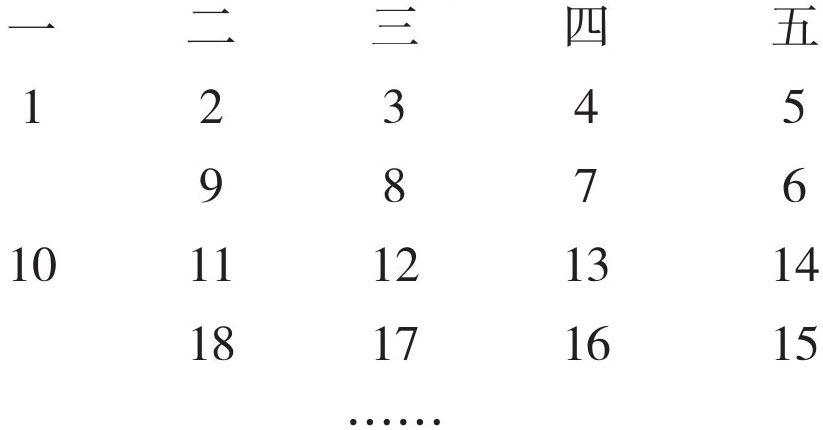
问最后一个学生应该在第几行第几列？
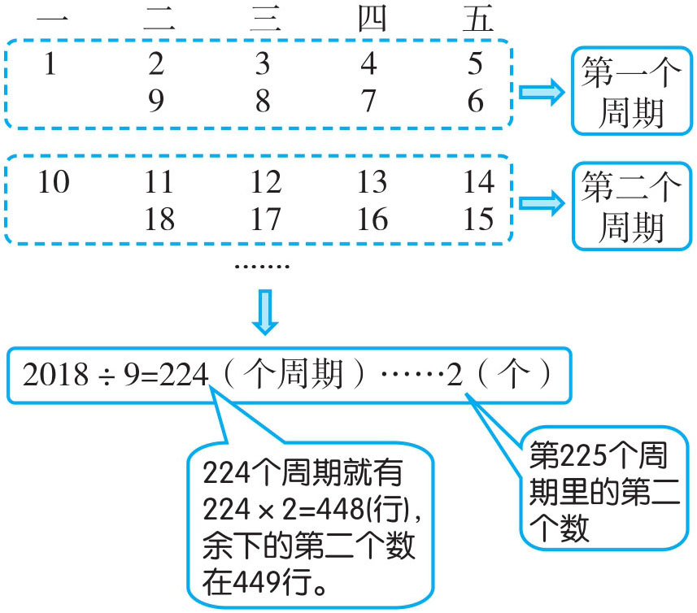
2018÷9=224（个周期）……2（个）
224+1=225（行）
答：最后一个学生应该在第225行第2列。
例4 2017年10月1日是星期日，那2018年1月1日是星期几？
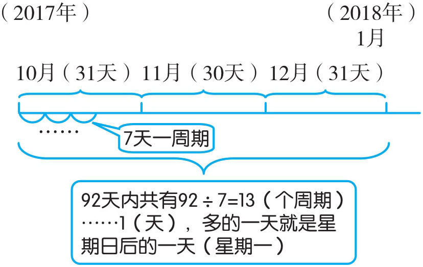
(31+30+31)÷7=13（个周期）
……1（天）
答：2018年1月1日是星期一。
例5
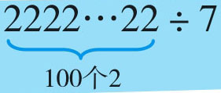
，当商是整数时，个位上的数是几？用被除数除以7，看每次的余数有什么规律，通过下面的竖式我们发现每次的商以3、1、7、4、6、0不断重复出现。3、1、7、4、6、0就是余数的一个周期，(100-1)÷6=16（个周期）……3（个），说明商是整数时，个位上的数是一个周期内的第3个数，即是7。
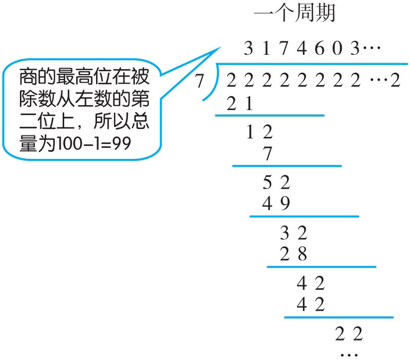
(100-1)÷6=16（个周期）……3（个）
答：个位上的数是7。
1．春节的大街挂满了彩灯，街上的彩灯按照3盏红灯、4盏蓝灯、1盏黄灯依次排列着，那第180盏灯是什么颜色？
2．
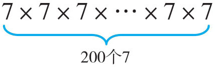
积的个位数字是几？3．把自然数按下面规律排列，440在哪一列？
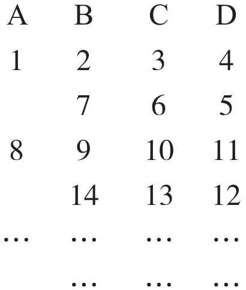
4．2017年7月1日是星期六，那2017年的9月1日是星期几？
5．
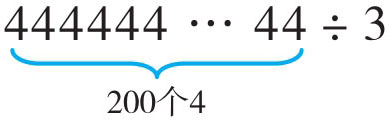
，当商是整数时，个位上的数是几？6．在一根绳子上依次穿2颗红珠、4颗白珠、5颗黑珠，并按此方式反复，如果从头开始数，直到第500颗，是什么颜色？这时红珠、白珠、黑珠各穿了多少颗？
7．
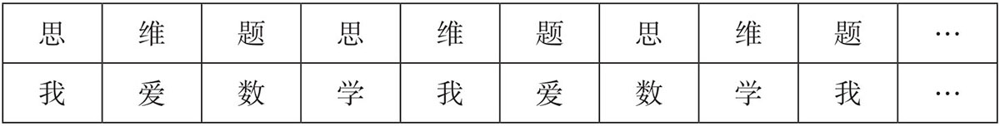
上表中，将每列上下两个字组成一组，如第一组为“思我”，第二组为“维爱”。第320组是什么字？
8．
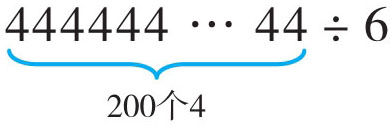
，当商是整数时，余数是几？9．如下图，把1~12这十二个号码摆成一个圆圈，现有一个小球，第一天从1号开始按顺时针方向前进428个位置，第二天接着按逆时针方向前进586个位置，第三天又顺时针前进428个位置，第四天再逆时针前进586个位置，……，如此继续下去。问：至少经过几天，小球又回到原来的1号位置？
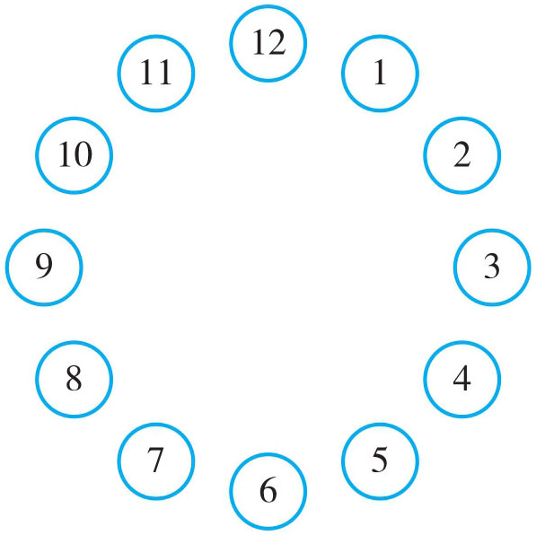